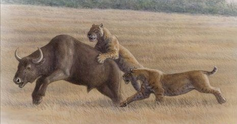
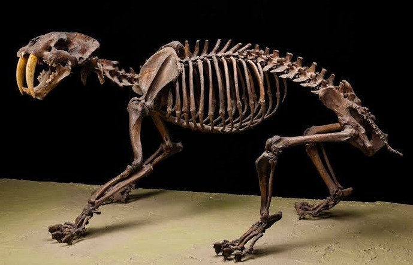

História
O Smilodon viveu nas Américas durante o Pleistoceno, período marcado por grandes mudanças climáticas e pela presença de diversos mamíferos de grande porte.
Seus fósseis são importantes para o estudo da evolução dos felinos e dos ecossistemas pré-históricos.

Características físicas
Dentes impressionantes
Seus dentes caninos superiores eram longos e se destacavam na boca. Eles provavelmente eram utilizados para provocar ferimentos durante a caça.
Força e alimentação
O Smilodon possuía membros dianteiros musculosos, que ajudavam a segurar e imobilizar suas presas. Era carnívoro e se alimentava de outros animais.
Extinção
O Smilodon desapareceu há aproximadamente 10 mil anos. Mudanças ambientais, alterações na disponibilidade de presas e outros fatores são estudados para explicar sua extinção.

Curiosidades
- Não era um tigre verdadeiro.
- Seus fósseis foram encontrados em diferentes regiões das Américas.
- Era adaptado para capturar e imobilizar presas.
- É um dos animais pré-históricos mais conhecidos atualmente.
Vídeo educativo
Assista a um vídeo para aprender mais sobre esse animal pré-histórico.